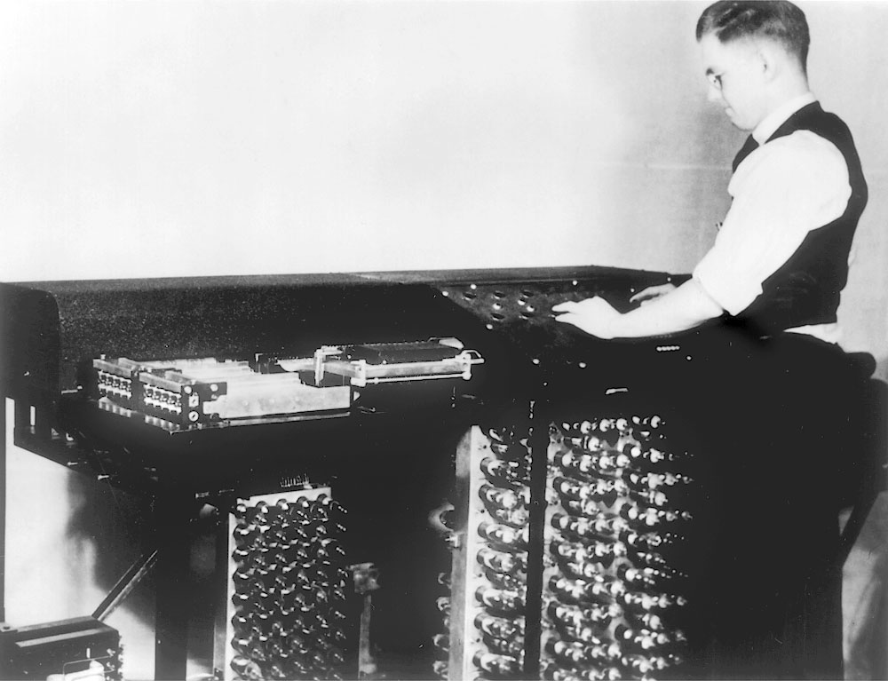

WHAT IS COMPUTER SCIENCE (CS)
Computer science is the study of computation and information.Computer science deals with theory of computation, algorithms, computational problems and the design of computer systems hardware, software and applications.Computer science addresses both human-made and natural information processes, such as communication, control, perception, learning and intelligence especially in human-made computing systems and machines.
Its fields can be divided into theoretical and practical disciplines. For example computational complexity theory describes the amount of resources required to solve computational problems, while computer graphics and computational geometry emphasizes more specific applications. Algorithmics have been called the heart of computer science.Programming language theory considers approaches to the description of computational processes, while software engineering involves the use of programming languages and complex systems.
Computer architecture and computer engineering deals with construction of computer components and computer-controlled equipment.Human–computer interaction considers the challenges in making computers useful, usable, and accessible. Artificial intelligence aims to synthesize goal-orientated processes such as problem-solving, decision-making, environmental adaptation, motion planning, learning, and communication found in humans and animals. According to Peter Denning, the fundamental question underlying computer science is, What can be automated?
 COMPUTER ARCHITECTURE
COMPUTER ARCHITECTURE
HISTORY OF CS
The earliest foundations of what would become computer science predate the invention of the modern digital computer. Machines for calculating fixed numerical tasks such as the abacus have existed since antiquity, aiding in computations such as multiplication and division. Algorithms for performing computations have existed since antiquity, even before the development of sophisticated computing equipment.
Wilhelm Schickard designed and constructed the first working mechanical calculator in 1623.In 1673, Gottfried Leibniz demonstrated a digital mechanical calculator, called the Stepped Reckoner.Leibniz may be considered the first computer scientist and information theorist, for, among other reasons, documenting the binary number system. In 1820, Thomas de Colmar launched the mechanical calculator industry when he invented his simplified arithmometer, the first calculating machine strong enough and reliable enough to be used daily in an office environment. Charles Babbage started the design of the first automatic mechanical calculator, his Difference Engine, in 1822, which eventually gave him the idea of the first programmable mechanical calculator, his Analytical Engine.He started developing this machine in 1834, and "in less than two years, he had sketched out many of the salient features of the modern computer"."A crucial step was the adoption of a punched card system derived from the Jacquard loom"making it infinitely programmable.In 1843, during the translation of a French article on the Analytical Engine, Ada Lovelace wrote, in one of the many notes she included, an algorithm to compute the Bernoulli numbers, which is considered to be the first published algorithm ever specifically tailored for implementation on a computer.Around 1885, Herman Hollerith invented the tabulator, which used punched cards to process statistical information; eventually his company became part of IBM. Following Babbage, although unaware of his earlier work, Percy Ludgate in 1909 published the 2nd of the only two designs for mechanical analytical engines in history. In 1937, one hundred years after Babbage's impossible dream, Howard Aiken convinced IBM, which was making all kinds of punched card equipment and was also in the calculator business to develop his giant programmable calculator, the ASCC/Harvard Mark I, based on Babbage's Analytical Engine, which itself used cards and a central computing unit. When the machine was finished, some hailed it as "Babbage's dream come true"
 WILHELM SCHICKARD
CHARLES BABBAGE
WILHELM SCHICKARD
CHARLES BABBAGE
During the 1940s, with the development of new and more powerful computing machines such as the Atanasoff–Berry computer and ENIAC, the term computer came to refer to the machines rather than their human predecessors.As it became clear that computers could be used for more than just mathematical calculations, the field of computer science broadened to study computation in general. In 1945, IBM founded the Watson Scientific Computing Laboratory at Columbia University in New York City. The renovated fraternity house on Manhattan's West Side was IBM's first laboratory devoted to pure science. The lab is the forerunner of IBM's Research Division, which today operates research facilities around the world.Ultimately, the close relationship between IBM and the university was instrumental in the emergence of a new scientific discipline, with Columbia offering one of the first academic-credit courses in computer science in 1946.Computer science began to be established as a distinct academic discipline in the 1950s and early 1960s.[The world's first computer science degree program, the Cambridge Diploma in Computer Science, began at the University of Cambridge Computer Laboratory in 1953. The first computer science department in the United States was formed at Purdue University in 1962. Since practical computers became available, many applications of computing have become distinct areas of study in their own rights.

ATANASOFF-BERRY COMPUTER
Etymology
Although first proposed in 1956,the term "computer science" appears in a 1959 article in Communications of the ACMin which Louis Fein argues for the creation of a Graduate School in Computer Sciences analogous to the creation of Harvard Business School in 1921,justifying the name by arguing that, like management science, the subject is applied and interdisciplinary in nature, while having the characteristics typical of an academic discipline.His efforts, and those of others such as numerical analyst George Forsythe, were rewarded: universities went on to create such departments, starting with Purdue in 1962.Despite its name, a significant amount of computer science does not involve the study of computers themselves. Because of this, several alternative names have been proposed.Certain departments of major universities prefer the term computing science, to emphasize precisely that difference. Danish scientist Peter Naur suggested the term datalogy,to reflect the fact that the scientific discipline revolves around data and data treatment, while not necessarily involving computers. The first scientific institution to use the term was the Department of Datalogy at the University of Copenhagen, founded in 1969, with Peter Naur being the first professor in datalogy. The term is used mainly in the Scandinavian countries. An alternative term, also proposed by Naur, is data science; this is now used for a multi-disciplinary field of data analysis, including statistics and databases.
In the early days of computing, a number of terms for the practitioners of the field of computing were suggested in the Communications of the ACM—turingineer, turologist, flow-charts-man, applied meta-mathematician, and applied epistemologist Three months later in the same journal, comptologist was suggested, followed next year by hypologist.The term computics has also been suggestedIn Europe, terms derived from contracted translations of the expression "automatic information" (e.g. "informazione automatica" in Italian) or "information and mathematics" are often used, e.g. informatique (French), Informatik (German), informatica (Italian, Dutch), informática (Spanish, Portuguese), informatika (Slavic languages and Hungarian) or pliroforiki (πληροφορική, which means informatics) in Greek. Similar words have also been adopted in the UK (as in the School of Informatics of the University of Edinburgh)."In the U.S., however, informatics is linked with applied computing, or computing in the context of another domain.
A folkloric quotation, often attributed to—but almost certainly not first formulated by—Edsger Dijkstra, states that "computer science is no more about computers than astronomy is about telescopes."The design and deployment of computers and computer systems is generally considered the province of disciplines other than computer science. For example, the study of computer hardware is usually considered part of computer engineering, while the study of commercial computer systems and their deployment is often called information technology or information systems. However, there has been much cross-fertilization of ideas between the various computer-related disciplines. Computer science research also often intersects other disciplines, such as philosophy, cognitive science, linguistics, mathematics, physics, biology, Earth science, statistics, and logic.
The academic, political, and funding aspects of computer science tend to depend on whether a department formed with a mathematical emphasis or with an engineering emphasis. Computer science departments with a mathematics emphasis and with a numerical orientation consider alignment with computational science. Both types of departments tend to make efforts to bridge the field educationally if not across all research.
Philosophy
A number of computer scientists have argued for the distinction of three separate paradigms in computer science. Peter Wegner argued that those paradigms are science, technology, and mathematics.Peter Denning's working group argued that they are theory, abstraction (modeling), and design.Amnon H. Eden described them as the "rationalist paradigm" (which treats computer science as a branch of mathematics, which is prevalent in theoretical computer science, and mainly employs deductive reasoning), the "technocratic paradigm" (which might be found in engineering approaches, most prominently in software engineering), and the "scientific paradigm" (which approaches computer-related artifacts from the empirical perspective of natural sciences, identifiable in some branches of Artificial Intelligence).Computer science focuses on methods involved in design, specification, programming, verification, implementation and testing of human-made computing systems.
PETER DENNING
Fields
Computer science is no more about computers than astronomy is about telescopes.
— Edsger Dijkstra
As a discipline, computer science spans a range of topics from theoretical studies of algorithms and the limits of computation to the practical issues of implementing computing systems in hardware and software.CSAB, formerly called Computing Sciences Accreditation Board—which is made up of representatives of the Association for Computing Machinery (ACM), and the IEEE Computer Society (IEEE CS)—identifies four areas that it considers crucial to the discipline of computer science: theory of computation, algorithms and data structures, programming methodology and languages, and computer elements and architecture. In addition to these four areas, CSAB also identifies fields such as software engineering, artificial intelligence, computer networking and communication, database systems, parallel computation, distributed computation, human–computer interaction, computer graphics, operating systems, and numerical and symbolic computation as being important areas of computer science.
Theoretical computer science
Theoretical Computer Science is mathematical and abstract in spirit, but it derives its motivation from the practical and everyday computation. Its aim is to understand the nature of computation and, as a consequence of this understanding, provide more efficient methodologies. All studies related to mathematical, logic and formal concepts and methods could be considered as theoretical computer science, provided that the motivation is clearly drawn from the field of computing.
Software engineering
Software engineering is the study of designing, implementing, and modifying the software in order to ensure it is of high quality, affordable, maintainable, and fast to build. It is a systematic approach to software design, involving the application of engineering practices to software. Software engineering deals with the organizing and analyzing of software—it doesn't just deal with the creation or manufacture of new software, but its internal arrangement and maintenance.